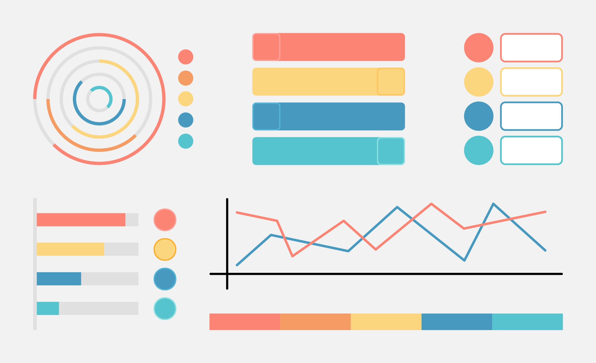
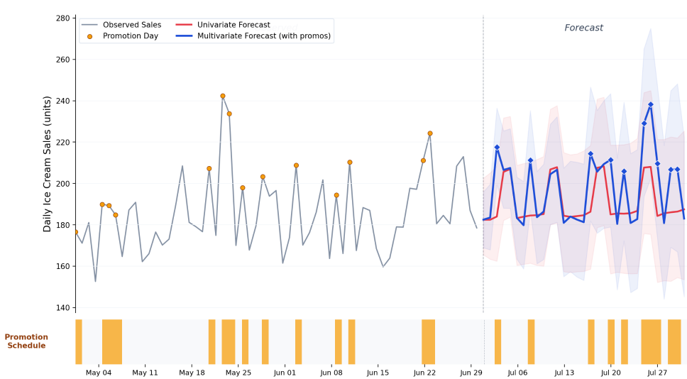

05 The New Stack 게시일 2026.08.31
구글, TimesFM-3 공개했지만 상용 사용은 막았다

이 모델은 시간에 따라 변하는 데이터를 예측한다. 금융권에서는 거래량, 수요, 장애 징후, 방문 패턴 같은 흐름을 다룰 때 쓰인다. TimesFM-3의 핵심은 여러 시계열을 함께 보고, 추가 학습 없이도 바로 예측할 수 있다는 점이다. 다만 지금은 업무용으로 바로 쓰기 어렵다.
핵심 브리핑
TimesFM-3는 여러 시계열을 함께 넣고도 별도 추가 학습 없이 예측하는 구글의 첫 모델이다. 판매 이력만 보는 대신 관련 상품 판매, 유동 인구, 날씨, 프로모션, 휴일 같은 변수까지 함께 반영하는 문제를 겨냥했다.
구글은 월요일에 TimesFM-3를 공개했다. 모델 크기는 3억 3000만 파라미터다. 학습에는 실제 데이터와 합성 데이터를 합쳐 1조 개가 넘는 시점 데이터를 썼다. 배포는 Hugging Face에서 시작했다.
구글은 자사 벤치마크 비교에서 TimesFM-3가 경쟁 모델보다 높았다고 밝혔다. 비교 대상에는 Amazon의 Chronos-2, Salesforce의 Moirai 2.0, Datadog의 Toto 2.0이 들어갔다. 구글은 Salesforce의 Gift-Eval과 Amazon·AutoGluon의 FEV-Bench 등을 봤다고 설명했다. 다만 수치는 구글이 제시한 자체 비교다.
모델 구조도 바뀌었다. 이전 버전은 예측 구간을 패치 단위로 차례로 만들었다. TimesFM-3는 예측 구간 전체에 가림 토큰을 붙인 뒤 한 번의 forward pass로 값을 채운다. 구글은 이 방식이 지연 시간을 줄이고, 중간 단계의 오차 누적도 덜 수 있다고 설명했다.
- 모델 크기: 3억 3000만 파라미터
- 학습 데이터: 1조 개 이상 시점 데이터
- 배포 위치: Hugging Face
- 가중치 조건: 비상업용, 비운영 환경만 허용
- 소스코드 라이선스: Apache
- 기본 가중치 라이선스: timesfm-non-commercial-license-v1.0

주요 트렌드
이번 발표의 쟁점은 성능보다 배포 조건이다. TimesFM-2.5는 Apache 2.0으로 나왔지만, TimesFM-3 기본 가중치는 비상업용으로만 풀었다. 구글은 성능이 높은 최신 가중치는 묶고, 코드만 열어 두는 쪽으로 선을 그었다.
구글은 동시에 BitQuery의 AI.FORECAST 명령에 TimesFM-2.5 대신 TimesFM-3를 넣을 계획이다. 즉, 최신 모델을 자사나 파트너 경로로 수익화하겠다는 뜻이 분명하다. 경쟁사도 예측 모델을 자사 플랫폼에 붙이고 있지만, 공개 가중치를 제한하고 유료 경로를 함께 두는 방식은 사업 구조를 더 선명하게 보여준다.
이 흐름은 오픈과 상용의 경계가 모델마다 달라진다는 신호다. 성능이 좋아 보여도, 기업은 라이선스와 운영 경로를 먼저 확인해야 한다.
업계의 움직임
시계열 예측 모델 시장에서는 Amazon의 Chronos-2, Salesforce의 Moirai 2.0, Datadog의 Toto 2.0 같은 모델이 이미 경쟁하고 있다. 여러 매체가 이번 공개를 함께 다루며, 다변량 예측과 라이선스 변화가 핵심 쟁점이라고 짚었다. BitQuery가 TimesFM-3를 자사 기능에 넣겠다고 밝힌 점도 실제 도입 움직임으로 읽힌다.
시사점과 체크포인트
우리 회사가 수요 예측, 이상 탐지, 거래량 전망에 이런 모델을 검토한다면 성능보다 사용 조건부터 봐야 한다. 비상업용 가중치만 허용되면 사내 실험은 가능해도 운영 배치는 막힐 수 있다.
확인할 항목은 분명하다.
- 법무·구매팀: 비상업용과 비운영 조건의 범위
- 데이터팀: 우리 데이터가 다변량 입력 구조에 맞는지
- 인프라팀: 외부 서비스 경유 배포가 필요한지
- 리스크팀: 예측 근거와 검증 로그를 남길 수 있는지
구글이 공개한 우위 수치는 자체 비교다. 독립 평가 결과와 실제 운영 사례는 더 확인해야 한다. 특히 금융 데이터는 계절성, 이벤트, 규제 변화가 크므로, 공개 벤치마크 점수만으로 바로 성능을 단정하면 안 된다.
주요 용어
원문 정보
제목: Google's new forecasting model beats everyone. You can't use it at work (yet).
게시일: 2026.08.31
출처 URL: https://thenewstack.io/google-timesfm-3-multivariate-forecasting/